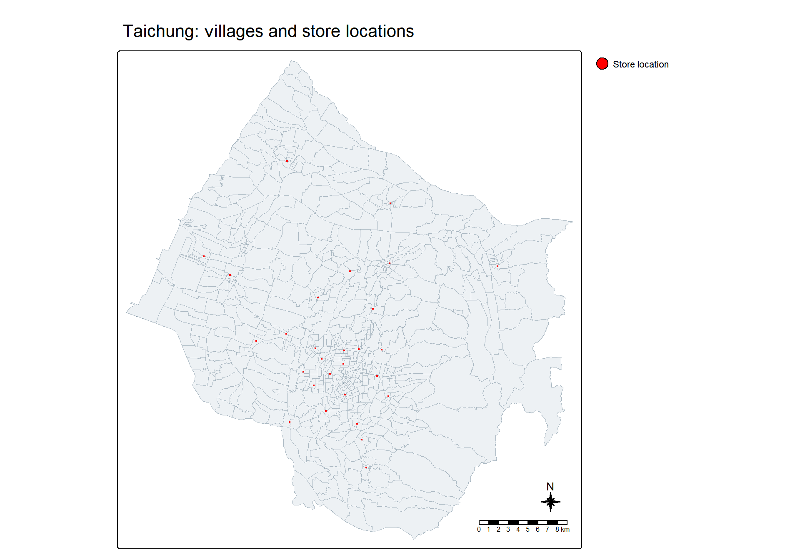
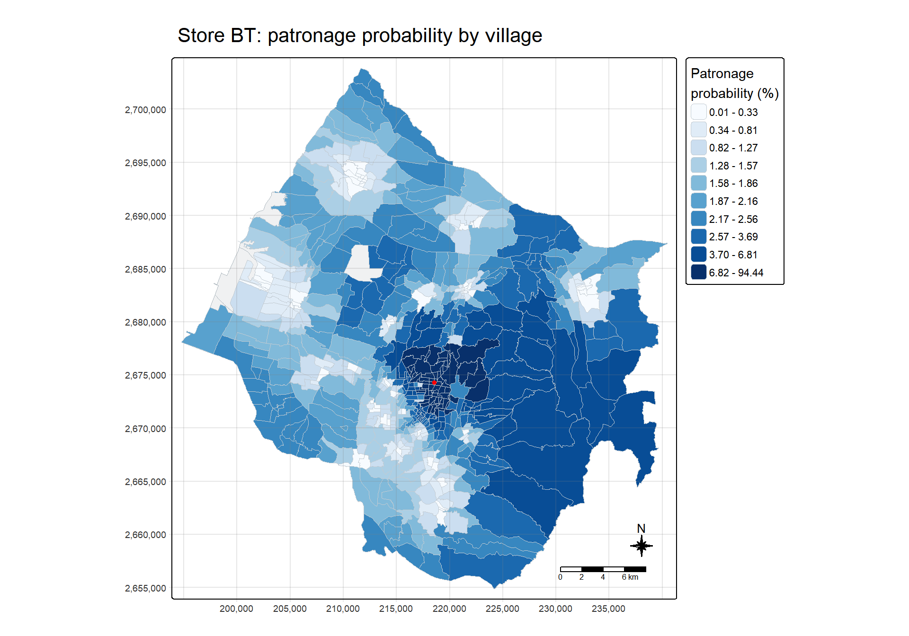
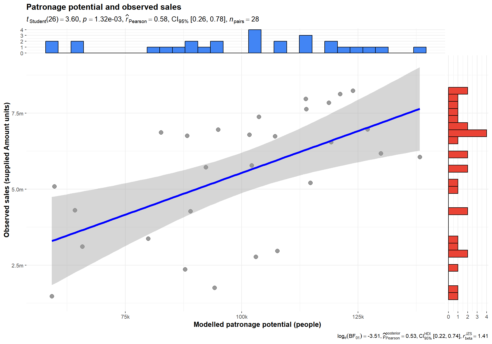

Show R code
install.packages(c("sf", "tidyverse", "MCI", "tmap", "ggstatsplot"),
repos = "https://cloud.r-project.org")Bao Sihan
October 19, 2026
In this exercise, I use the Huff model to examine the trade areas of fast-food stores in Taichung City. I follow the instructor’s Chapter 18 workflow: prepare store and village data, calculate village-to-store distances, estimate patronage probabilities, map the trade area of Store BT, and compare population-weighted patronage potential with observed store sales.
The model treats store choice as a probability. A nearby store receives a larger share of a village’s potential demand, while competing stores share the remainder. I retain the teaching assumptions of equal store attractiveness and inverse-square distance decay. This is an illustration of the method using the supplied data, rather than a calibrated forecast of current sales.
I use sf for spatial data and distances, tidyverse for preparation, MCI for the Huff calculations, tmap for maps, and ggstatsplot for the final scatterplot. The setup block below is provided for a new R environment and is not run during rendering.
The supplied exercise archive contains Taichung store locations, town and village boundaries, 2019 population, and store sales. I keep the required source files in this exercise’s own data folder. The instructor’s code uses the *_TC layers, which are also the names in the archive; I follow these file names throughout.
The population fields are H_CNT (households), P_CNT (total population), M_CNT (male population), and F_CNT (female population). The sales table includes store code, point-of-delivery code, number of bills, sales amount, and average bill. The archive does not establish the sales period or the currency of Amount, so I retain the source’s units in the comparison.
stores <- st_read("data/geospatial/STORES_TC.shp", quiet = TRUE)
town <- st_read("data/geospatial/TOWN_TC.shp", quiet = TRUE)
village_raw <- st_read("data/geospatial/VILLAGE_TC.shp", quiet = TRUE)
stopifnot(st_crs(stores)$epsg == 3826,
st_crs(town)$epsg == 3826,
st_crs(village_raw)$epsg == 3826,
!st_is_longlat(village_raw),
all(st_is_valid(stores)), all(st_is_valid(town)),
all(st_is_valid(village_raw)),
!anyDuplicated(stores$Store_CD),
!anyDuplicated(village_raw$VILLCODE))All three layers use TWD97 / TM2 zone 121 (EPSG:3826), a projected CRS whose units are metres. The supplied geometries are valid, so no geometry repair is needed. Keeping a common projected CRS allows the distance calculation to use consistent units.
pop2019 <- read_csv("data/aspatial/pop2019.csv",
col_types = cols(
COUNTY_ID = col_character(),
TOWN_ID = col_character(),
V_ID = col_character()),
show_col_types = FALSE)
store_sales <- read_csv("data/aspatial/Store_sales_data.csv",
na = "",
show_col_types = FALSE)
inventory <- tibble(
Dataset = c("Store locations", "Town boundaries", "Village boundaries",
"2019 population", "Store sales records"),
Records = c(nrow(stores), nrow(town), nrow(village_raw),
nrow(pop2019), nrow(store_sales))
)| Dataset | Records |
|---|---|
| Store locations | 28 |
| Town boundaries | 28 |
| Village boundaries | 622 |
| 2019 population | 625 |
| Store sales records | 5,499 |
tm_shape(town) +
tm_polygons(fill = "#edf1f4", col = "#8395a4", lwd = 0.6) +
tm_shape(village_raw) +
tm_borders(col = "#aab8c2", lwd = 0.3) +
tm_shape(stores) +
tm_dots(fill = "red", col = "black", size = 0.15) +
tm_add_legend(type = "symbols", fill = "red", col = "black",
labels = "Store location") +
tm_title("Taichung: villages and store locations") +
tm_compass(type = "8star", size = 1.5) +
tm_scalebar() +
tm_layout(frame = TRUE)
The red points show the stores included in the model. The study area is the extent of the supplied boundaries; these files do not imply that every possible competitor is represented. I use a static map here so the study area remains visible without an online basemap.
First, I aggregate Bills and Amount by store code. This produces one row per store before joining to the spatial layer. Each mapped store is assigned Store_size = 100, following the instructor’s example. This is a common attractiveness value, rather than a measured floor area.
stopifnot(!anyNA(store_sales$`Store Code`),
!anyNA(store_sales$Bills), !anyNA(store_sales$Amount),
all(store_sales$Bills >= 0), all(store_sales$Amount >= 0))
store_sales_aggre <- store_sales %>%
group_by(`Store Code`) %>%
summarise(Total_Bill = sum(Bills, na.rm = TRUE),
Total_Sales = sum(Amount, na.rm = TRUE),
.groups = "drop")
sales_stores_outside_layer <- sum(
!store_sales_aggre$`Store Code` %in% stores$Store_CD)
stores <- stores %>%
left_join(store_sales_aggre,
by = join_by(Store_CD == `Store Code`),
relationship = "one-to-one") %>%
mutate(Store_size = 100)
stopifnot(!anyNA(stores$Total_Bill), !anyNA(stores$Total_Sales),
all(stores$Store_size > 0))The sales file contains 234 store codes, including 206 outside the mapped store layer. The spatial join retains the 28 mapped stores, and every one has a matched sales total. The wider sales file therefore does not add unmapped destinations to the model.
I set na = "" when importing sales because NA is a literal store code in 29 source records. This preserves the identifier instead of letting the CSV reader interpret it as a missing value. That code is outside the mapped store layer.
The population table writes village IDs with a hyphen, while the boundary layer does not. I remove the hyphen and keep the key as text before joining. I also check that the population key is unique, so a join cannot duplicate a village polygon.
pop2019 <- pop2019 %>%
mutate(V_ID = str_remove_all(V_ID, "-"))
stopifnot(!anyNA(pop2019$V_ID), !anyDuplicated(pop2019$V_ID),
is.character(pop2019$V_ID),
is.character(village_raw$VILLCODE),
is.character(stores$Store_CD))
population_rows_without_boundary <- sum(
!pop2019$V_ID %in% village_raw$VILLCODE)
village_joined <- village_raw %>%
left_join(pop2019, by = join_by(VILLCODE == V_ID),
relationship = "one-to-one")
missing_population <- sum(is.na(village_joined$P_CNT))
village <- village_joined %>%
filter(!is.na(P_CNT))
stopifnot(nrow(village_joined) == nrow(village_raw),
!anyNA(st_drop_geometry(village)[c("H_CNT", "P_CNT", "M_CNT", "F_CNT")]),
all(village$P_CNT > 0),
all(village$P_CNT == village$M_CNT + village$F_CNT))5 polygons have no matched population, and 8 population rows have no matching boundary. Following the exercise, I exclude the polygons with missing P_CNT, leaving 617 villages and 2,804,359 residents for modelling. I do not treat missing population as zero or redistribute the unmatched records. All four population fields are complete in the retained villages.
The instructor uses st_point_on_surface() to obtain one representative point per village. This is an interior point, which is not necessarily the geometric centroid. It keeps the origin inside its polygon, although a single point still simplifies the distribution of residents within a village.
village_center <- st_point_on_surface(village)
distmat <- st_distance(village_center, stores)
rownames(distmat) <- village$VILLCODE
colnames(distmat) <- stores$Store_CD
stopifnot(identical(dim(distmat), c(nrow(village), nrow(stores))),
identical(rownames(distmat), village$VILLCODE),
identical(colnames(distmat), stores$Store_CD),
all(is.finite(distmat)), all(as.numeric(distmat) > 0))The matrix has villages in rows and stores in columns: 617 by 28. These are straight-line distances in metres, ranging from 108.5 m to 41395.4 m. They are not road distances or travel times.
distmat_long <- distmat %>%
as.data.frame() %>%
rownames_to_column(var = "VILLCODE") %>%
pivot_longer(cols = -VILLCODE,
names_to = "Store_CD", values_to = "distance") %>%
mutate(distance = as.numeric(distance))
stopifnot(nrow(distmat_long) == nrow(village) * nrow(stores),
!anyDuplicated(distmat_long[c("VILLCODE", "Store_CD")]),
!anyNA(distmat_long$distance),
all(distmat_long$distance > 0))The long table contains 17,276 unique village-store pairs. Positive distances matter because the inverse-square function is undefined at zero.
I append the destination attractiveness to every pair. The resulting interaction table contains the village ID, store code, store size, and distance required by MCI::huff.shares().
interaction_matrix <- distmat_long %>%
left_join(stores %>% st_drop_geometry() %>%
select(Store_CD, Store_size),
by = "Store_CD", relationship = "many-to-one") %>%
relocate(distance, .after = last_col())
pairs_per_village <- interaction_matrix %>% count(VILLCODE)
pairs_per_store <- interaction_matrix %>% count(Store_CD)
stopifnot(!anyNA(interaction_matrix),
all(pairs_per_village$n == nrow(stores)),
all(pairs_per_store$n == nrow(village)))Every retained village is connected to all 28 stores. No distance cutoff is applied. Because all stores have the same attractiveness, relative distance is the only factor differentiating their utility in this example.
For village \(i\) and store \(j\), the utility and probability are
\[ U_{ij} = A_j^{\gamma}d_{ij}^{\lambda}, \qquad p_{ij} = \frac{U_{ij}}{\sum_{k=1}^{J} U_{ik}}. \]
The denominator sums over all competing stores for the same village. I explicitly retain the defaults used by the instructor: \(A_j=100\), \(\gamma=1\), \(\lambda=-2\), and power functions for both attractiveness and distance. In this package, the negative distance exponent is supplied directly as lambda = -2. These defaults are documented in the MCI reference manual.
huff_share <- huff.shares(
interaction_matrix, "VILLCODE", "Store_CD", "Store_size", "distance",
gamma = 1, lambda = -2, atype = "pow", dtype = "pow")
# Recalculate the weights and within-village denominator independently.
huff_check <- huff_share %>%
group_by(VILLCODE) %>%
mutate(manual_weight = Store_size^1 * distance^(-2),
manual_denominator = sum(manual_weight),
manual_probability = manual_weight / manual_denominator) %>%
ungroup()
probability_sums <- huff_share %>%
group_by(VILLCODE) %>%
summarise(total_probability = sum(p_ij), .groups = "drop")
probability_sum_error <- max(abs(probability_sums$total_probability - 1))
stopifnot(nrow(huff_share) == nrow(interaction_matrix),
!anyDuplicated(huff_share[c("VILLCODE", "Store_CD")]),
all(is.finite(huff_share$p_ij)),
all(huff_share$p_ij > 0 & huff_share$p_ij < 1),
max(abs(as.numeric(huff_share$U_ij) -
huff_check$manual_weight)) < 1e-10,
max(abs(as.numeric(huff_share$sum_U_ij) -
huff_check$manual_denominator)) < 1e-10,
max(abs(huff_share$p_ij - huff_check$manual_probability)) < 1e-10,
nrow(probability_sums) == nrow(village),
probability_sum_error < 1e-10)The independent calculation agrees with the package output. All probabilities lie between 0 and 1, and each village’s probabilities sum to 1 within numerical precision (maximum error 2.22e-16). This checks the model’s allocation of a village’s demand across stores; it does not establish that the assumed choice behaviour matches observed customers.
With equal attractiveness, doubling a store’s distance reduces its unnormalised utility to one quarter. The final probability also depends on the alternatives in that village’s denominator, so a probability should be read relative to the other included stores.
The instructor’s executable code selects BT (Bei-Tung). I use that code consistently when filtering both the probability table and the store point, and join the probabilities to villages using VILLCODE explicitly.
market_share <- huff_share %>% filter(Store_CD == "BT")
Trade_area <- village %>%
left_join(market_share, by = "VILLCODE", relationship = "one-to-one") %>%
mutate(Patronage_percent = 100 * p_ij)
selected_store <- stores %>% filter(Store_CD == "BT")
stopifnot(nrow(selected_store) == 1,
nrow(Trade_area) == nrow(village),
!anyNA(Trade_area$p_ij))tm_shape(town) +
tm_polygons(fill = "#f0f1f2", col = "#aeb8bf", lwd = 0.3) +
tm_shape(Trade_area) +
tm_polygons(fill = "Patronage_percent", col = "#c2cbd2", lwd = 0.2,
fill.scale = tm_scale_intervals(style = "quantile", n = 10,
values = "brewer.blues"),
fill.legend = tm_legend(title = "Patronage\nprobability (%)")) +
tm_shape(selected_store) +
tm_dots(size = 0.3, fill = "red", col = "black") +
tm_title("Store BT: patronage probability by village") +
tm_layout(frame = TRUE) +
tm_compass(type = "8star", size = 1.5) +
tm_scalebar() +
tm_grid(alpha = 0.2)
BT’s village-level probability ranges from 0.011% to 94.4%. Darker villages allocate a larger proportion of their modelled demand to BT. The ten quantile classes emphasise relative differences across villages; their numerical widths differ, and they are not fixed thresholds for a primary or secondary trade area.
This is a probabilistic trade area. A village can contribute demand to BT and to several other stores simultaneously, rather than being assigned exclusively to one location. Pale background areas without a modelled probability correspond to the excluded population records.
Following the exercise, I append village population and use shares.total() to calculate
\[ E_j = \sum_i p_{ij}P_i. \]
Since \(P_i\) is a resident count, \(E_j\) is population-weighted patronage potential in people, not currency or a count of observed visits. Converting it into revenue would require additional assumptions about participation, spending, visit frequency, and the sales period.
huff_share_pp <- huff_share %>%
left_join(village %>% st_drop_geometry() %>% select(VILLCODE, P_CNT),
by = "VILLCODE", relationship = "many-to-one") %>%
relocate(distance, .after = last_col())
huff_total <- shares.total(
huff_share_pp, "VILLCODE", "Store_CD", "p_ij", "P_CNT")
manual_totals <- huff_share_pp %>%
group_by(Store_CD) %>%
summarise(manual_E_j = sum(p_ij * P_CNT), .groups = "drop")
store_sales_est <- stores %>%
left_join(huff_total, by = join_by(Store_CD == suppliers_single),
relationship = "one-to-one") %>%
left_join(manual_totals, by = "Store_CD", relationship = "one-to-one")
conservation_error <- abs(sum(store_sales_est$sum_E_j) - sum(village$P_CNT))
stopifnot(!anyNA(store_sales_est$sum_E_j),
all(store_sales_est$sum_E_j > 0),
max(abs(store_sales_est$sum_E_j - store_sales_est$manual_E_j)) < 1e-7,
abs(sum(huff_total$share_j) - 1) < 1e-10,
conservation_error < 1e-7)
store_sales_nongeom <- st_drop_geometry(store_sales_est)
top_potential <- store_sales_nongeom %>%
arrange(desc(sum_E_j)) %>%
slice_head(n = 5) %>%
transmute(Store = Store_CD,
`Modelled potential (people)` = round(sum_E_j),
`Observed sales (Amount)` = Total_Sales)The store potentials sum to 2,804,359 people, equal to the retained population within numerical precision. This conservation follows from each village’s probabilities summing to 1: the model allocates the entire included population among the included stores.
The five largest modelled potentials are:
| Store | Modelled potential (people) | Observed sales (Amount) |
|---|---|---|
| BT | 138,306 | 6,053,572 |
| FY | 129,902 | 6,179,100 |
| DT | 127,032 | 6,962,742 |
| FH | 123,889 | 8,234,234 |
| JW | 121,170 | 8,125,120 |
ggscatterstats(
store_sales_nongeom,
x = sum_E_j, y = Total_Sales,
type = "parametric",
title = "Patronage potential and observed sales",
xlab = "Modelled patronage potential (people)",
ylab = "Observed sales (supplied Amount units)",
ggplot.component = list(
scale_x_continuous(labels = scales::label_number(scale = 1e-3, suffix = "k")),
scale_y_continuous(labels = scales::label_number(scale = 1e-6, suffix = "m"))))
The Pearson correlation across the 28 stores is 0.576, indicating a positive association in this dataset. Stores with larger modelled population potential tend to have higher observed sales, but distance and resident population do not explain all sales differences.
The axes use different units. Their association is useful as an exploratory comparison, while their numerical difference is not a sales forecast error. The plot uses the same stores that supplied the observed sales, and no model parameters are fitted or held-out prediction assessed here. Equal attractiveness, omitted competitors, village interior points, and unobserved customer spending can all affect the relationship.
The instructor finishes by reshaping the probabilities so each village has one row and each store has one column. I retain this object for subsequent comparisons without printing the full matrix. The explicit row and column matching below preserves the original village and store order after huff.shares() sorts its output internally.
huff_share_wider <- huff_share %>%
select(VILLCODE, Store_CD, p_ij) %>%
pivot_wider(names_from = Store_CD, values_from = p_ij)
probability_matrix <- as.matrix(
huff_share_wider[match(village$VILLCODE, huff_share_wider$VILLCODE),
stores$Store_CD])
dimnames(probability_matrix) <- list(village$VILLCODE, stores$Store_CD)
manual_weights <- matrix(as.numeric(distmat), nrow = nrow(village))^(-2)
manual_probabilities <- manual_weights / rowSums(manual_weights)
stopifnot(identical(dim(probability_matrix), dim(distmat)),
identical(rownames(probability_matrix), rownames(distmat)),
identical(colnames(probability_matrix), colnames(distmat)),
!anyNA(probability_matrix),
max(abs(rowSums(probability_matrix) - 1)) < 1e-10,
max(abs(probability_matrix - manual_probabilities)) < 1e-10)The wide probability matrix is 617 villages by 28 stores. A final comparison with the distance matrix confirms that the probabilities remain attached to the correct village-store pairs, rather than relying on row position after sorting.
The Huff model produces a complete set of competing probabilities for each origin. Equal attractiveness makes the spatial pattern depend on relative distance, while population weighting changes the question from a village’s choice probability to a store’s total potential customer base.
This exercise also shows why preparation is part of the model. The population join defines which residents enter the denominator-free total demand; the destination layer defines which stores compete within each village’s probability denominator. Checking unique keys, matrix orientation, probability sums, and population conservation helps confirm that the calculation matches those choices.
The BT map describes relative patronage probabilities under the exercise assumptions. The sales scatterplot then provides an exploratory association with observed store outcomes. Neither result removes the need for suitable distance measures, observed attractiveness, complete competitors, and time-aligned demand data when applying the method to an actual location decision.
Hands-on_Ex08.zip: store, town and village shapefiles; pop2019.csv; and Store_sales_data.csv. See data provenance for the retained files and scope.huff.shares() and shares.total().